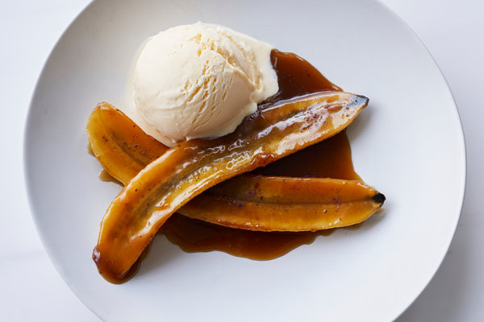

Banana Foster Recipe

Description
Make the best banana foster recipe you have ever tried using this simple recipe.
Bananas foster is made by cooking sliced bananas and walnuts in a buttery rum sauce and serving it over vanilla ice cream. A Father's Day favorite we all love!
Ingredients
- 1/4 cup butter
- 2/3 cup dark brown sugar
- 3.5 tbsp rum
- 1.5 tsp vanilla extract
- 1/2 tsp ground cinnamon
- 3 bananas, sliced lengthwise
- 1/4 cup chopped walnuts
- 1 pint vanilla ice cream
Steps
- Melt butter. Stir in brown sugar, rum, vanilla, cinnamon and bring to boil
- Place bananas and walnuts in pan, cook until softened.
- Servve over vanilla ice cream